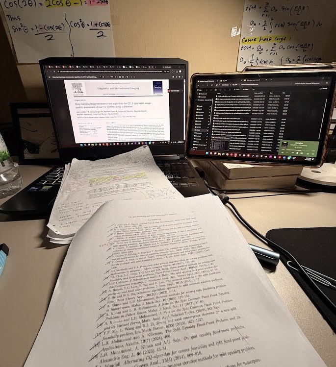

Split Feasibility & Fixed-Point Thesis
Undergraduate thesis supervised by Prof. Dr. Adem Kilicman analyzing convergence of iterative CQ and alternating projection algorithms across infinite-dimensional Hilbert spaces (H1, H2) with applications to signal recovery and medical CT image reconstruction.